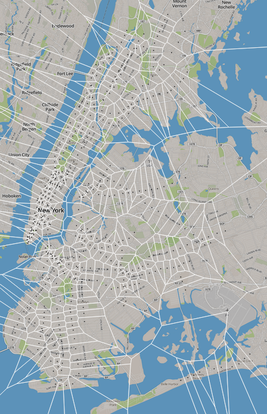

|  |
There was a time when New York City subways were not wheelchair-friendly, and in 1984,plans were made to change that. It went down like this. A team of lawyers, including James Weisman, a lawyer with United Spinal Association, drafted up the American Disabilities Act. It prohibits discrimination based on disability and, specifically, outlines requirements for public accommodation. But when it was being put forth in Congress, cities like New York and Philadelphia needed a bit more convincing before they would agree to sign on. These subways systems were grandfathered in, and limits were placed on the extent to which the law could be used to compel them to meet accessible standards. For New York City, this came in the form of a concession: that they would designate "100 Key Stations," and make them accessible by 2020.
New York City obliged. Now, out of the 468 Stations the make up the New York City Transit Subways and Staten Island Railway, 89 meet the standards needed in order to be of use to someone in a wheelchair. Key stations are those which appeared to have a consistently high number of riders, multiple transfer between lines or different modes of travel, nearness to major activity centers, and whether it was at the end of a line. Most of them are in Manhattan, which Weisman points out is the epicenter of 5:00 turn-style revenue.

"It looks like everyone is in the business section in Manhattan, but you need feeder stations,"says Weisman. For example, the Gun Hill Station isn't accessible because people want to go to Gun Hill but because people need to get from Gun Hill to work. But, Pinover and Weisman both point out the feedback loop that is perpetuated by only having certain subways accessible. There are very few key stations in poorer neighborhoods where the prevalence of disabled persons is high. Unable to access a reliable transportation system, the disabled are discriminated against in the job market, and living on lower wages forces them into lower income neighbourhoods that do not offer viable accessible stations. "I thought 30 years after we made this deal, people would think the deal was stupid and wonder why all stations aren't accessible, but it hasn't gotten there yet," says Weisman.
It is more difficult for a disabled person to get around, and providing them with less access makes no sense. MTA has a website updating elevator repair status, but the system is not without its kinks. "The elevator will stop during the transit. It happens every day and there are people who get stranded in the subway", says Julia Pinover, a lawyer with Disability Rights Advocates. These persons usually have to take the train to the next accessible stop, which can often mean riding it to the end of the line.

Accessible stops are few and far between depending on the borough you live in. Mariette Bates, an expert in disability studies and a professor at CUNY, recalls the struggles her student faced when trying to make use of the Access-a-Ride service. Her student's commute from Queens was usually facilitated much later than scheduled, hampered by traffic. As a result, she almost never made it to classes. Despite this, Bates is an optimist. "I've been here since the 1950s and so I do see the progress."
Much more than congested city streets make Access-a-Ride problematic and some users even refer to it as "Stress-a-Ride." The service, which is only granted to those that meet the criteria, must be booked full 24-hours in advance. That means no drop of the hat errands. The wait time for pick up can be up to 30 minutes, patrons can be suspended for missing appointments and are only allowed two bags totalling 40 pounds aboard the bus. These are just a few of the policies and the cost of the service is still the same as regular metro fare.
When he first started dealing with the problem of accessibility in the late 70s, explains Weisman, there were people telling Ed Koch, mayor at the time, that it would be cheaper to start a Para-transit. Weisman says this was a lie, but Koch listened and that's what Access-a-Ride is today."
"It was penny wise and pound foolish to have relied on Access-a-Ride," says Weisman. The system costs approximately 66 dollars per ride, per person. This totals to more than 500 million dollars per year. Weisman sees this as an inexplicable waste of money that could be invested into subway stations. "With the current transportation system, if you are in a wheelchair, there is no way for some to get an equally full and healthy life," says Pinover. She points out that the issue of accessibility affects more than just the person in the wheelchair. It affects their families, friends, significant others or anyone else who might be travelling alongside them at the time.
"If this were excluding blacks, or women, or Jews, or some other group, people would be pushing to solve it quickly," says Weisman."No one does it because no one thinks of it. It's just people with disabilities."
By: Krystnell A. Storr
Data for subway locations obtained from the MTA's website.